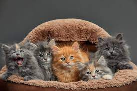
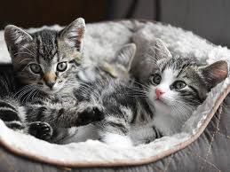
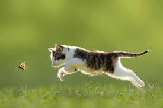

parrafo 1
parrafo 2
parrafo 3
parrafo 4
Parrafo 1
Tienen una flexibilidad y agilidad impresionante, pueden saltar desde más de 3 metros de altura. Los gatos pueden rotar sus orejas 180 grados. Los gatos pueden pasar hasta 14 horas dormidos.
Debido a su naturaleza nocturna, los gatos suelen ser mucho más hiperactivos en la tarde.Mamífero de la familia de los félidos, digitígrado, doméstico, de unos 50 cm de largo desde la cabeza hasta el arranque de la cola, que por sí sola mide unos 20 cm, de cabeza redonda, lengua muy áspera, patas cortas y generalmente pelaje suave y espeso, de color blanco, gris,
pardo, rojizo o negro, empleado en algunos Su alimentación. El gato es un animal estrictamente carnívoro. Se alimenta de lo que caza, no es carroñero, y basa su dieta en la ingesta de roedores, pájaros,
reptiles y, ocasionalmente, pequeños insectos y peces....Es un animal mamífero porque nace vivo de la madre y mama para alimentarse. Tiene el cuerpo cubierto de pelo, tiene cuatro patas y rabo. Tiene unas uñas muy afiladas que utiliza para cazar y sujetar ratas y ratones. Utiliza la lengua para limpiarse y
sus grandes bigotes para guiarse por la noche.A los gatos les encanta que les toquen alrededor de las zonas en las que se localizan las glándulas faciales, como la base de las orejas, bajo la barbilla y cerca de las mejillas. Los humanos, por su parte, somos seres inherentemente
sociales para los que el acercamiento y el contacto son muestras de afecto.

Parrafo 2
Los gatos domésticos, sea cual sea su raza, son todos miembros de una misma especie, Felis silvestris catus, que mantiene una relación con los humanos desde hace mucho tiempo. Los antiguos egipcios habrían sido los primeros en domesticar gatos, hace ya 4000 años. Probablemente, los gatos salvajes se vieron atraídos a las comunidades humanas por la abundancia de roedores que había en ellas, y su habilidad para cazarlos les hizo ganarse la simpatía de sus habitantes.
Los primeros egipcios adoraban a una diosa con figura de gato e incluso momificaban a sus
mascotas preferidas para que les acompañaran en su viaje al otro mundo...¡acompañado
s de ratones también momificados! Posteriormente, civilizaciones de todo el mundo adoptaron a
los gatos como animales de compañía.

parrafo 3
Al igual que sus parientes salvajes, los gatos domésticos son cazadores natos, capaces de acechar a sus presas y abalanzarse sobre ellas con sus garras y dientes. Son particularmente eficaces de noche, cuando sus ojos reflectantes les dotan de una visión mucho más nítida que la de sus víctimas. También poseen un oído muy agudo. Al igual que todos los felinos, son ágiles y rápidos y sus largas colas les ayudan a tener un extraordinario sentido del equilibrio
(Relacionado: La leyenda del "gato demoníaco" que vaga por el Capitolio de Estados Unidos
Galería relacionada: Gatos callejeros del mundo
Gato en Chefchaouen
VER GALERÍA
Los gatos se comunican marcando árboles, postes o muebles con sus zarpas o con su orín. Dejar su rastro es el modo que tienen de informar a otros del alcance de su territorio. Su repertorio vocal va desde el ronroneo hasta el chillido.
La dieta de los gatos domésticos se ha mantenido predominantemente carnívora a lo largo de la evolución, por ello han desarrollado un estómago simple, apropiado para digerir carne cruda. También han mantenido una lengua áspera que les ayuda a aprovechar hasta el último trozo de carne de los huesos de los animales (y también a acicalarse ellos mismos). Sus dietas, no obstante, han variado con las golosinas que les ofrecen los hombres, aunque pueden completarla con sus propios trofeos de caza.

Parrafo 4
¿Con qué sueñan los gatos?
Los gatos domésticos fueron algunos de los primeros animales sometidos a la investigación de los sueños. Michel Jouvet, pionero de los estudios sobre el sueño, descubrió pruebas del sueño felino en la década de 1960, cuando observó el comportamiento de los gatos mientras dormían y lo alteró de forma drástica.
En el sueño REM, los músculos humanos no se mueven mucho a pesar de la intensa actividad mental que impulsa nuestros sueños. Este estado de atonía hace que el cuerpo no represente nuestros sueños por muy reales que parezcan. Jouvet descubrió que, en los gatos, una estructura del tronco cerebral llamada protuberancia parecía regular el sueño REM y producir una parálisis parcial.
(Relacionado: El cambio climático está erosionando un recurso muy valioso: el sueño)
Sin embargo, al eliminar partes del puente de Varolio, Jouvet provocó un cambio drástico en el comportamiento. Con sus cerebros sumidos en el sueño REM, los gatos comenzaron a moverse como si estuvieran despiertos, cazando, saltando, acicalándose y defendiéndose agresivamente de amenazas invisibles.
Jouvet denominó a este periodo sueño paradójico, en el que el cuerpo está quieto pero la mente permanece totalmente activa. Esto proporcionó una ventana a lo que ocurría en los cerebros dormidos de los gatos.

.png)